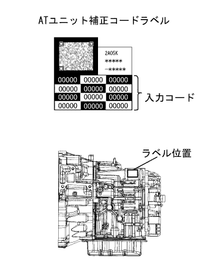
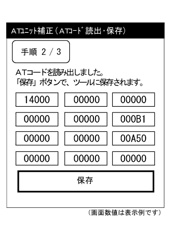
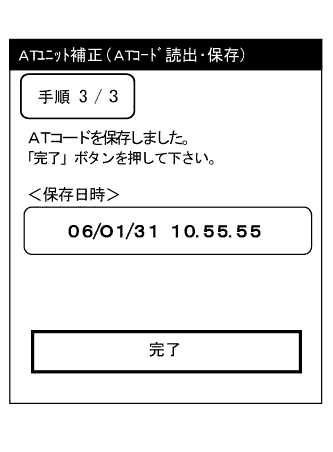

)
)Electronically Controlled Automatic Transaxle [ECT] (U660E) Utility |
)Stop the vehicle on a level road surface.
Confirm that the shift position is in P, connect SST (TaSCAN) to DLC3, and turn the IG ON and the SST power ON.
Perform A/T Learned Value Initialization
Following the SST (TaSCAN) screen display, select and execute main menu [Work Support] → work support category [Transmission] → [A/T/CVT Learned Value Initialization] to initialize the A/T learned values.
After learned value initialization, turn SST (TaSCAN) power OFF and IG OFF, and remove the SST.
Start the engine and drive so that the total driving time at vehicle speed 40km/h or more reaches 60 seconds or more before stopping the engine.
| Replacement Parts | Compensation Work |
|---|---|
| Transaxle Assembly (both ECU-integrated and transaxle-only replacement) |
|
| Transmission Control Computer (when vehicle computer A/T code can be read) |
|
|
|
|
|
A/T Unit Compensation (Manual A/T Code Input)
 |
Record the A/T code (5 digits × 12 blocks) printed on the TM label of the supply part.
Complete the transaxle assembly replacement work. (see)
With the IG OFF, connect SST (TaSCAN) to the DLC3 connector.
With the shift lever in P, press the IG switch 2 times without depressing the brake pedal to turn the IG ON.
Turn SST (TaSCAN) power ON and select "Work Support" → "Support Category/Transmission" → "A/T Unit Compensation (Manual A/T Code Registration)".
 |
While checking the screen display, press "Next" to proceed to the input screen (step 4/6).
Operate the buttons on the screen to input the A/T code on the TM label in the same positions as on the label, and press "Complete" after input.
 |
Confirm that the input A/T code is the same as the TM label, and press "Start".
Confirm work completion on the screen.
A/T Unit Compensation (A/T Code Read/Save) and A/T Unit Compensation (Automatic A/T Code Input)
With the IG OFF, connect SST (TaSCAN) to DLC3.
With the shift lever in P, press the IG switch 2 times without depressing the brake pedal to turn the IG ON.
Turn SST (TaSCAN) power ON and select "Work Support" → "Support Category/Transmission" → "A/T Unit Compensation (A/T Code Read/Save)".
Press "Start" to read the A/T code stored in the transmission control computer.
 |
After reading of the A/T code (5 digits × 12 blocks) is completed, press "Save" to store the A/T code in SST (TaSCAN).
 |
Record the <Save Date/Time> and press "Complete".
Turn the IG OFF and replace the transmission control computer.
After completing the replacement work, set SST (TaSCAN) in the same way as for reading.
From the SST (TaSCAN) screen, select "Work Support" → "Support Category/Transmission" → "A/T Unit Compensation (Automatic A/T Code Registration)".
 |
Press "Next" to proceed to the confirmation screen (step 2/3), check the save date/time and press "Start".
Confirm work completion on the screen.
A/T Unit Compensation (Initialization)
Complete the replacement work.
With the IG OFF, connect SST (TaSCAN) to DLC3.
With the shift lever in P, press the engine switch 2 times without depressing the brake pedal to turn the IG ON.
Turn SST (TaSCAN) power ON and select "Work Support" → "Support Category/Transmission" → "A/T Unit Compensation (A/T Code Initialization)".
Start initialization following the screen display and confirm that initialization is completed.
Driving Learning
With the IG OFF, connect SST (TaSCAN) to DLC3.
Depress the brake pedal, turn the IG ON and start the engine.
Turn SST (TaSCAN) power ON, select monitor item "Accelerator Opening" under "Diagnosis" → "System Diagnosis/Chassis" → "System Name/ECT" → "Diagnosis Function/ECU Data" and execute.
With the vehicle stopped, check the pedal depression amount that gives an accelerator opening of 15%.
From a vehicle speed of 0km/h, depress the accelerator pedal at an accelerator opening of 15% or less and accelerate to the highest possible vehicle speed while keeping the accelerator constant.
If the shift shock is large, repeat until there is no shift shock.
With the vehicle stopped, check the pedal depression amount that gives an accelerator opening of 25 to 35%.
From a vehicle speed of 0km/h, depress the accelerator to an opening of 25 to 35% and accelerate to the highest possible vehicle speed while keeping the accelerator constant.
If the shift shock is large, repeat until there is no shift shock.